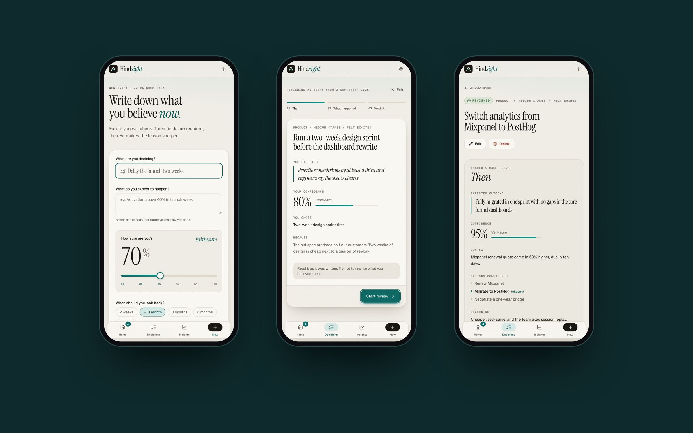
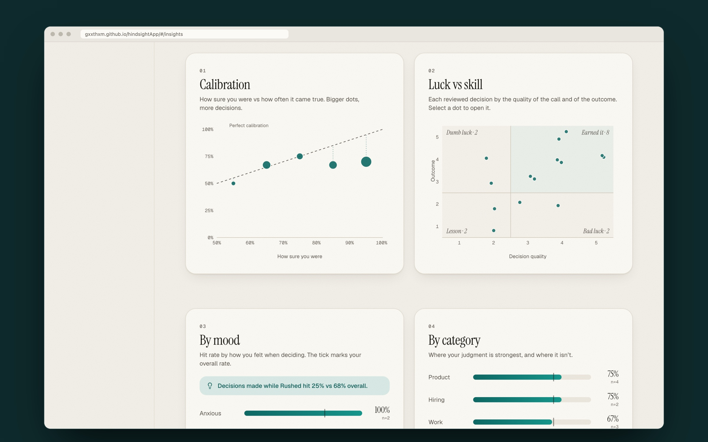
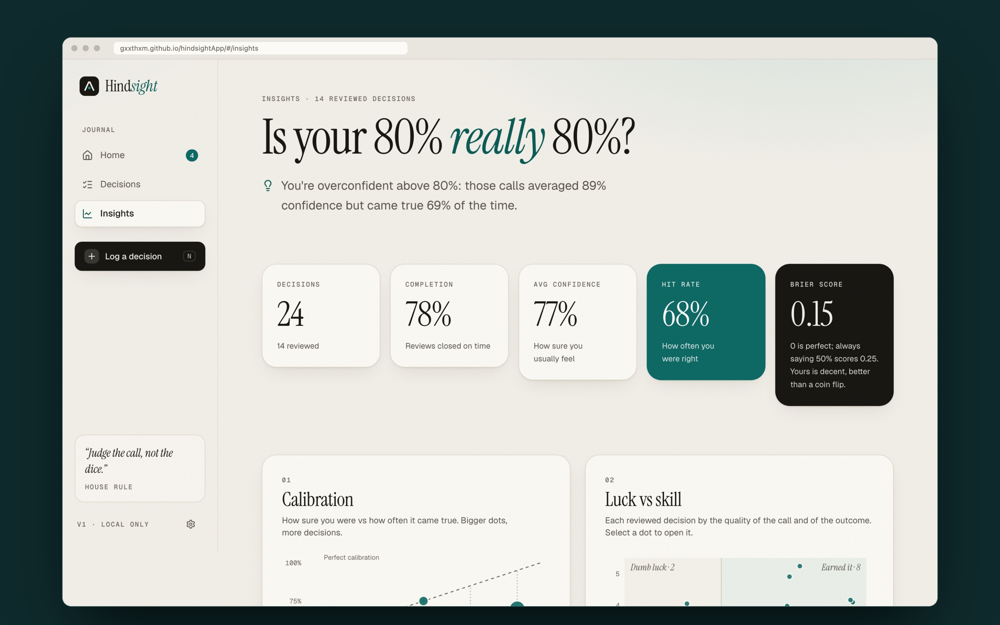
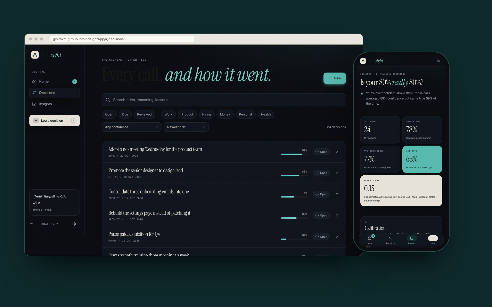

Hindsight is a decision journal that separates good decisions from good luck. You log a call with what you expect and how sure you are, get prompted to review it later, and see how well-calibrated your judgment really is. I wrote the product brief, then designed and built it as a working web app with Claude Code.
Problem Statement
Product managers, founders and team leads make dozens of meaningful calls a month (hires, roadmap bets, pricing, vendors) and almost never check them. Memory rewrites the past: good outcomes get credited to skill and bad ones to luck. Without a record of what you believed at the time, you can’t learn from your own decisions.
The core insight is that decision quality and outcome quality are different things. A good call can turn out badly, and a bad one can get lucky. Hindsight makes that distinction explicit every time you look back.
Goals
- Log a decision in under 90 seconds, with only three required fields.
- Put decisions that are due for review front and centre, so the loop actually closes.
- Rate the outcome and the decision separately at review time.
- Show a calibration chart and a few honest stats: does your 80% really mean 80%?
- Let a visitor understand the whole loop in under 60 seconds, with no sign-up.
The Loop

- Quick capture: what you’re deciding, what you expect, and how sure you are, on a 50–100% slider with human labels from “Coin flip” to “Certain (really?)”. Context, options, mood and stakes are optional. Press N anywhere to start one.
- Review queue: the dashboard leads with a swipeable stack of decisions whose review date has arrived, oldest first (“due 20 days ago”), with Review and Snooze 1 week.
- Three-step review: re-read what you believed, record what happened (Yes, Partly or No), then rate outcome and decision quality separately. The result lands on a 2×2: Earned it, Bad luck, Dumb luck or Lesson.
- Then vs Now: every decision shows your original reasoning next to the review, so you can see exactly where your thinking was off.
Is Your 80% Really 80%?

- Calibration: confidence buckets against how often those calls came true, with a dashed diagonal for perfect calibration and dot size showing how many decisions sit behind each point.
- Luck vs skill: every reviewed decision plotted by the quality of the call and of the outcome, with the four quadrants labelled.
- Plain-English annotations: charts say what they mean, such as “You’re overconfident above 80%” or “Decisions made while Rushed hit 25% vs 68% overall.”
- Honest stats: hit rate, average confidence, review completion and a Brier score, each with a one-line explanation of what the number means.

Product Decisions
- Belief is locked after review. Once a decision is reviewed, its expected outcome and confidence can’t be edited. A journal you can quietly revise is no longer an honest record.
- “Partly” counts as half. Real outcomes are rarely binary, and forcing yes or no pushes people to round in their own favour.
- Insights wait for five reviews. Calibration from two data points is noise, so a “needs more data” state is more honest than a confident-looking chart.
- Undo instead of confirm. Delete, reset and clear act immediately and offer Undo in a toast, which is faster and just as safe.
- Seed data that tells a story. 24 sample decisions from a Head of Product, dated relative to today so the demo never goes stale: roughly calibrated at 60–79%, overconfident above 80%, and noticeably worse when rushed.
Design Direction

- A quiet editorial notebook: warm off-white paper, neutral greys and one confident accent, deep teal. Dark mode switches to a deep ink blue-black.
- Type with a voice: Instrument Serif for headlines, decision titles and big numbers, with an italic accent in each headline; Geist for the interface and Geist Mono for small labels.
- Microcopy that’s slightly wry: “Up late. Four decisions are waiting for a verdict,” and a house rule in the sidebar: “Judge the call, not the dice.”
- Motion with intent: page transitions, a sliding nav indicator, a review deck that springs forward, a rolling confidence dial, count-up stats and charts that draw in as they scroll into view. All of it switches off for people who prefer reduced motion.
Building It
I wrote the brief first (problem, users, success criteria, data model and design direction), then built it with Claude Code from that brief, and followed up with a redesign pass on type, spacing and motion.
- React and TypeScript with Vite, Tailwind CSS, accessible Radix-based components, Zustand for state and Recharts for the charts.
- Frontend only: everything is saved in the browser, with Export JSON and a one-click reset of the sample data.
- The stats maths (hit rate, Brier score, calibration buckets and status) lives in pure functions with unit tests.
- Responsive from 375 px up, keyboard navigable, with visible focus rings, colour never the only signal, and text summaries of every chart for screen readers.
Outcome & Learnings
- Writing a tight brief first, with success criteria and a data model, made the build fast and kept scope honest.
- Separating decision quality from outcome quality turned out to be the whole product. Every screen exists to protect that distinction.
- Seed data is a design tool. A demo that tells a story (overconfidence, rushed calls) shows the value in seconds, where an empty state can’t.